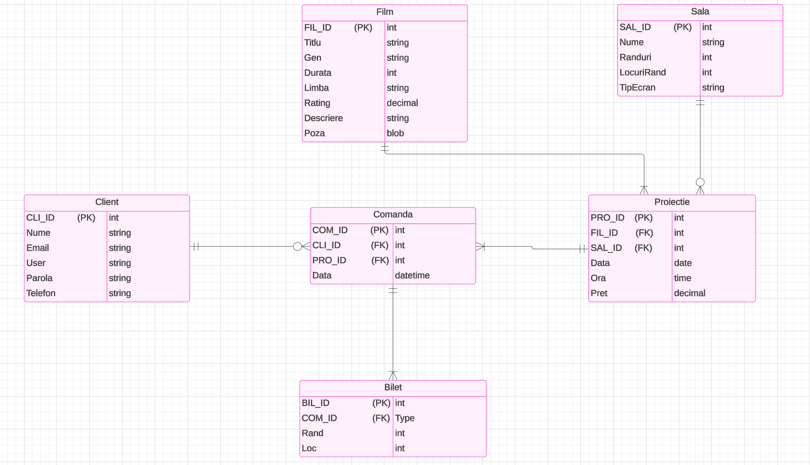
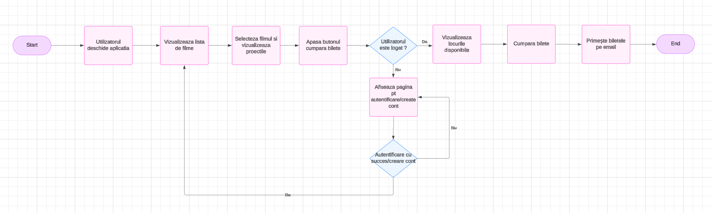

Despre Aplicație
Aplicația noastră permite utilizatorilor să vizualizeze filmele și proiecțiile disponibile, să vadă locurile libere și să achiziționeze bilete online. Aplicația include următoarele funcționalități:
- Înregistrare și autentificare utilizatori
- Adăugare de filme și proiecții noi
- Vizualizarea locurilor libere și ocupate in salile de cinama
- Achiziționare de bilete online
Cum Folosești Aplicația?
Pentru a accesa aplicația și a cumpăra bilete, urmează pașii de mai jos:
- Creează un cont: Înregistrează-te în aplicație completând un formular cu informațiile necesare (nume, email, telefon).
- Autentifică-te: După crearea contului, folosește detaliile tale pentru a te loga în aplicație.
- Pagina Principală: După logare, vei vedea pagina principală, unde sunt afișate imagini cu toate filmele disponibile în cinema.
- Selectează un film: Apasă pe poza filmului pe care dorești să îl vizionezi. Se va deschide o pagină cu un orar al proiecțiilor disponibile pentru acel film.
- Alege o proiecție: Selectează data și ora dorită pentru proiecție.
- Selectează locurile: O fereastră nouă va afișa locurile libere și ocupate din sala de cinema. Alege locurile care îți convine.
- Trimite rezervarea: După selectarea locurilor, apasă pe butonul de confirmare (Submit). Vei primi biletele electronice pe email.
Biletul primit pe email va conține toate detaliile necesare: data, ora, sala și locurile rezervate.
Rolurile în Aplicație
În aplicația noastră există două roluri principale:
- Utilizator: Poate naviga prin filme, vizualiza proiecțiile disponibile și cumpăra bilete.
- Administrator (Owner): Poate adăuga și modifica informațiile despre filme și proiecții și gestiona sălile de cinema.
Procese Principale
- Înregistrare și autentificare: Utilizatorul creează un cont și se autentifică pentru a accesa funcționalitățile.
- Adăugarea unui film: Administratorul poate adăuga un film nou completând informațiile necesare.
- Vizualizarea proiecțiilor: Utilizatorul selectează un film și vede programul proiecțiilor.
- Achiziția biletelor: Utilizatorul selectează locurile și finalizează achiziția.
Schema Bazei de Date
Schema bazei de date este compusă din următoarele entități:
- Film: Conține informațiile despre filme, inclusiv titlul, genul, durata, limba și ratingul.
- Sala: Stochează detalii despre sălile de cinema, cum ar fi capacitatea și tipul de ecran.
- Proiecție: Leagă un film de o sală specifică într-o anumită dată și oră, reprezentând o proiecție programată.
- Client: Informații despre utilizatori, cum ar fi nume, email și telefon.
- Bilet: Înregistrează biletele achiziționate de utilizatori, inclusiv locul și prețul, și face legătura între client, proiecție și locul din sală.
Relațiile Dintre Tabele
În baza de date, tabelele sunt interconectate astfel:
- Film și Proiecție: Un film poate avea mai multe proiecții, dar o proiecție este asociată unui singur film (relație 1:N).
- Sala și Proiecție: O sală poate găzdui mai multe proiecții în timp, dar o proiecție este asociată unei singure săli (relație 1:N).
- Client și Bilet: Un client poate cumpăra mai multe bilete, iar fiecare bilet este asociat unui singur client (relație 1:N).
- Proiecție și Bilet: O proiecție poate avea mai multe bilete vândute, dar fiecare bilet este asociat unei singure proiecții (relație 1:N).
Constrângerile Bazei de Date
Constrângerile definite în baza de date pentru a asigura integritatea datelor sunt:
- Într-o sală, toate rândurile au același număr de locuri, asigurând o structură uniformă a sălii.
- Pentru o anumită proiecție, toate locurile din sală au același preț, asigurând consistența prețurilor.
- Un client poate achiziționa mai multe bilete într-o singură comandă, dar doar pentru o singură proiecție.
- Data comenzii nu poate fi ulterioară datei și orei proiecției, pentru a evita cumpărarea biletelor după începerea proiecției.
- Numărul total de bilete vândute pentru o proiecție nu poate depăși capacitatea totală a sălii, asigurând respectarea limitelor de locuri disponibile.
Arhitectura Aplicației
Aplicația este construită din următoarele componente:
- Frontend: Interfața utilizator este creată cu HTML, CSS și JavaScript pentru o experiență interactivă și responsive.
- Backend: Serverul gestionează logica aplicației și interacționează cu baza de date. Acesta este implementat cu PHP.
- Baza de date: Stochează informațiile despre filme, proiecții, săli, utilizatori și bilete. Poate fi realizată cu MySQL.
Diagrama UML - Fluxul Procesului de Achiziție Bilete
Diagrama următoare arată fluxul principal de achiziție a biletelor în aplicație:
Utilizatorul parcurge pași precum deschiderea aplicației, vizualizarea listei de filme, selectarea filmului și proiectiei, cumpărarea biletelor, și primirea acestora prin e-mail. Dacă utilizatorul nu este logat, este redirecționat către pagina de autentificare sau creare cont înainte de a continua procesul de achiziție.